DESIGN PORTFOLIO
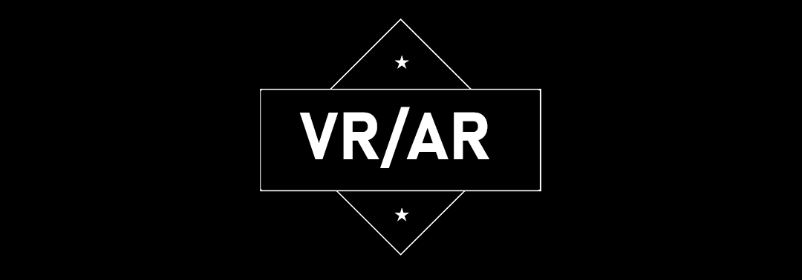
De sidste 3 år har jeg har arbejdet frivilligt som Video Jockey hvorpå jeg producere og styre videomateriale til musik-artister på festivaller. Den pludselige Corona-situation lukkede muligheden for disse live koncerter og gjorde altså at man skulle tænke i nye medier for at opleve musikoplevelser sammen. Her har jeg som mit afsluttende bachelorprojekt på min studieretning på ITU udformet en VR applikation i Unity hvorpå man kan lave visuals sammen i et virtuelt rum. Hvis man er nysgerrig kan min projekt thesis læses nedenfor.
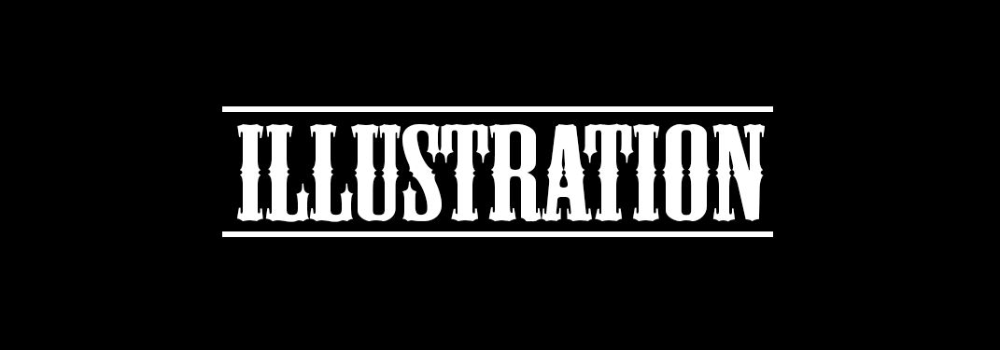
Klik på billeder for at se mere information ⬇
 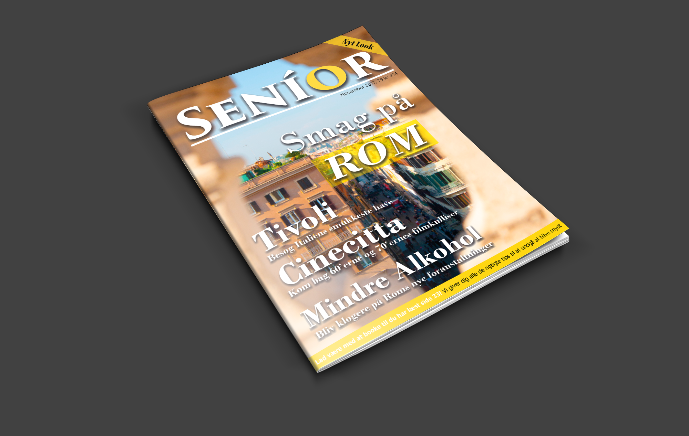
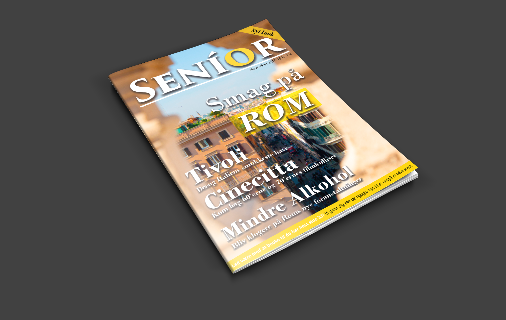

 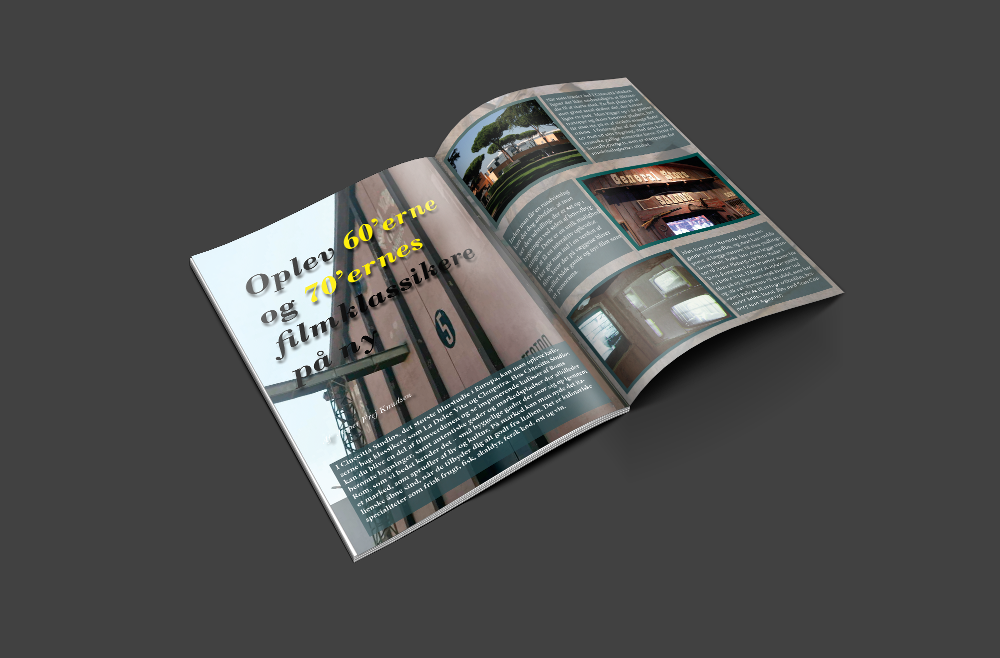
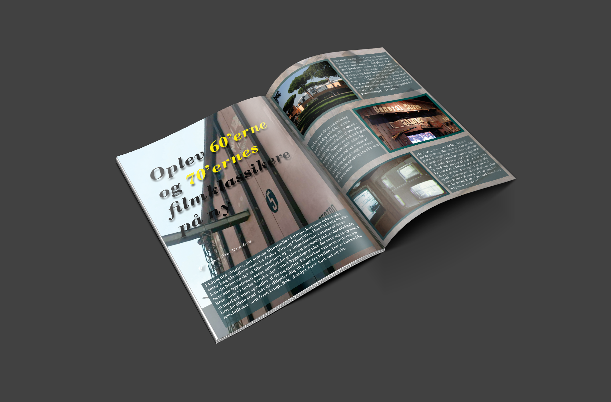

 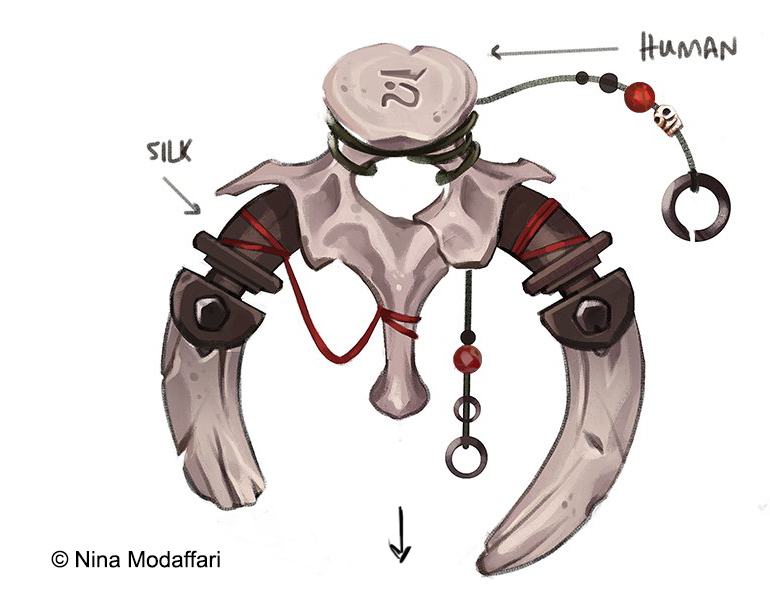
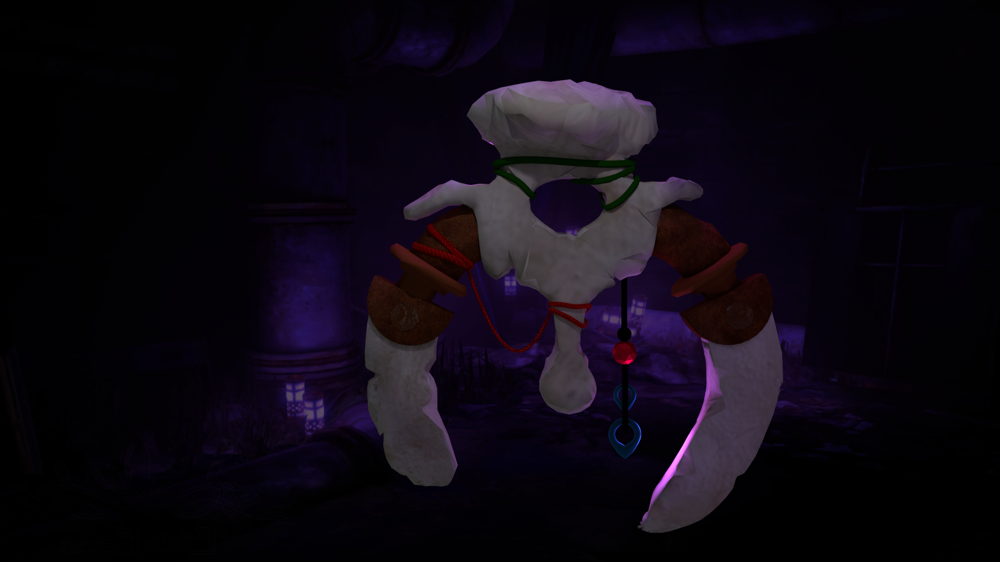
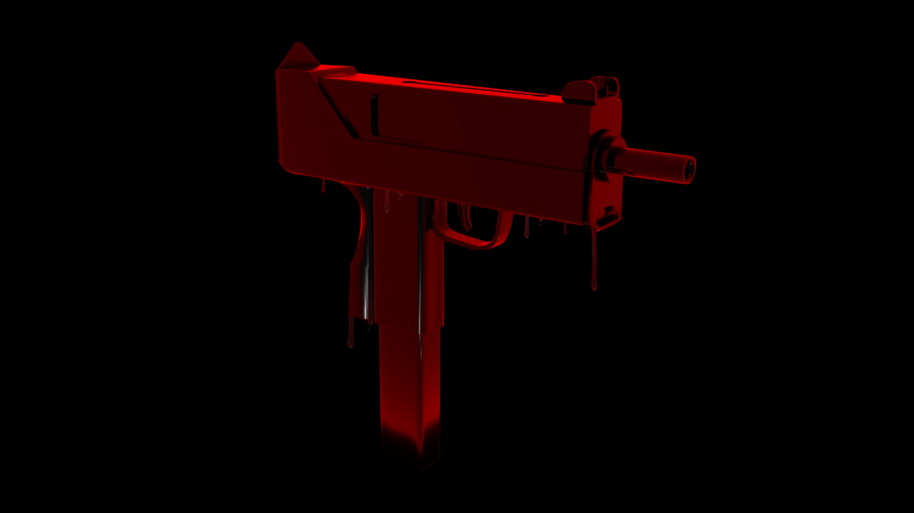
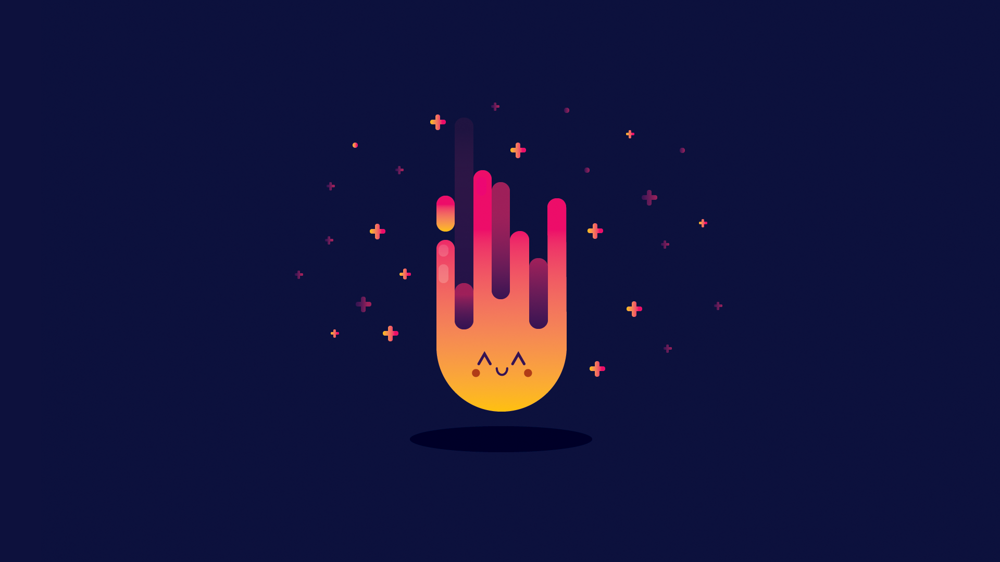
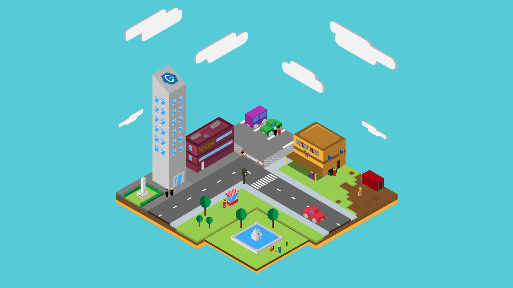
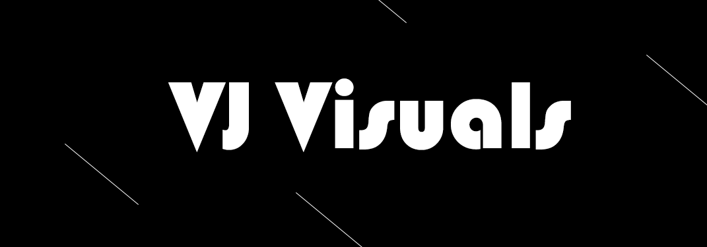
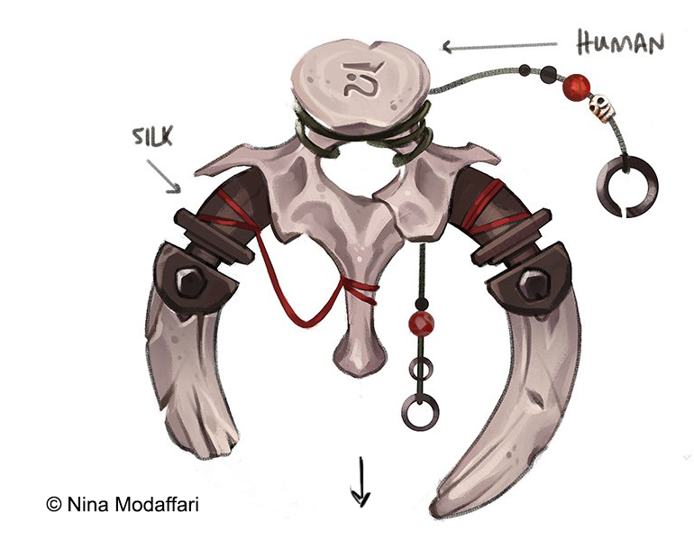
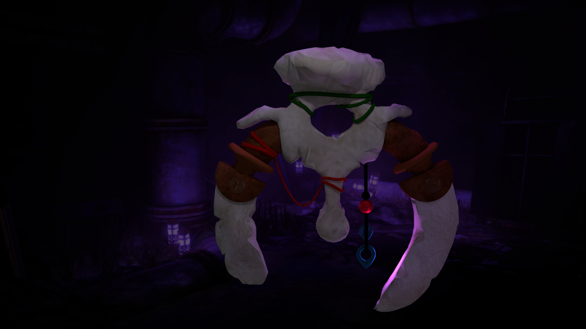
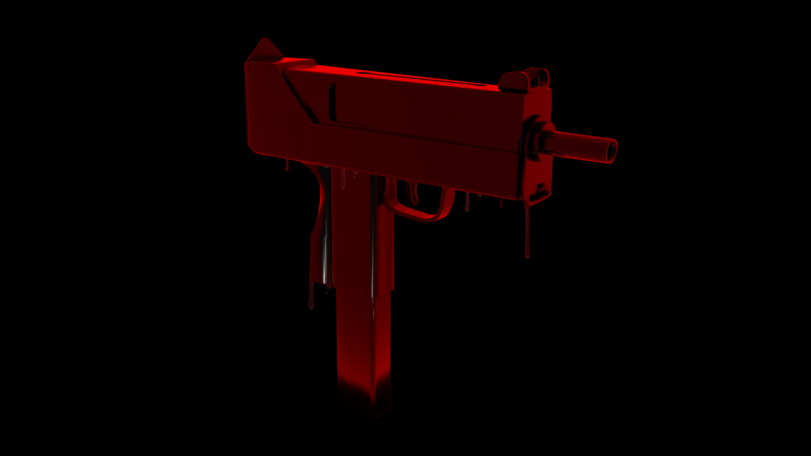
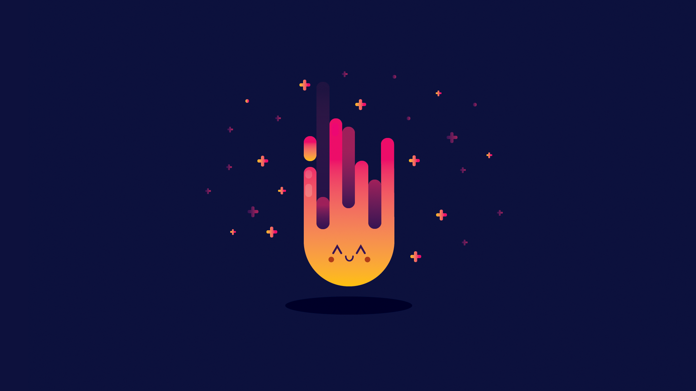
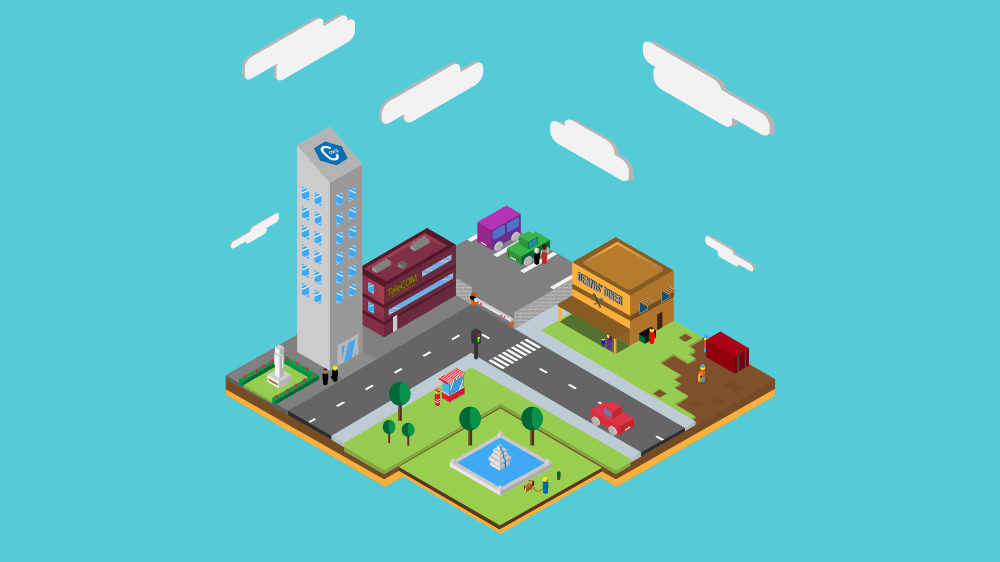
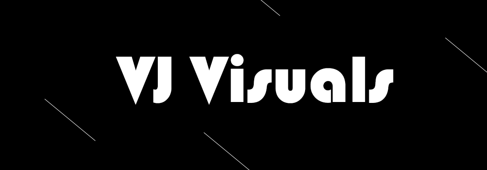


Om mig
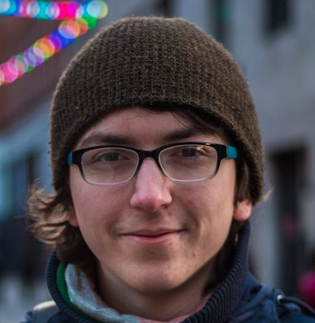
22 år, Primært fokus indenfor branding og illustration. Selvlært i
Adobes programmer, har investeret meget tid i design både som studie
og hobby. Rutineret indenfor 3D i henholdsvis Blender og Sketchup.
basisforståelse for programmering i Python 3.7 samt HTML og CSS. De
sidste 3 år har jeg har også været Video Jockey hvorpå jeg producere
og styre videomateriale til musik-kunstnere.
Nuværende studiejob: Studiemedhjælper på NEXT KBH
Mediegymnasium
2021 - 2023 Studerende på cand.IT i "Digital Design og
Interaktive Teknologier" på IT-Universitetet
Erfaring: Interaktionsdesign, Designdrevet Innovation
2018 - 2021 Studerende på bachelor i "Digital Design og
Interaktive Teknologier" på IT-Universitetet
Erfaring: Programmering, Interaktionsdesign, Virksomhedsprocessor
2015 - 2018 Studeret på NEXT Sukkertoppen på "Internationale Medier"-linjen
Erfaring: Mediefag, Kommunikation/IT, Engelsk, Programmering
Programmer:
Kontakt
Navn: Theis Theodor Bech Nielsen.Mail: thtn@itu.dk
Mobil: +45 61 78 13 30
Adresse: Godthåbsvej 32 B 3. sal tv, 2000 Frederiksberg
CSS fra w3.css